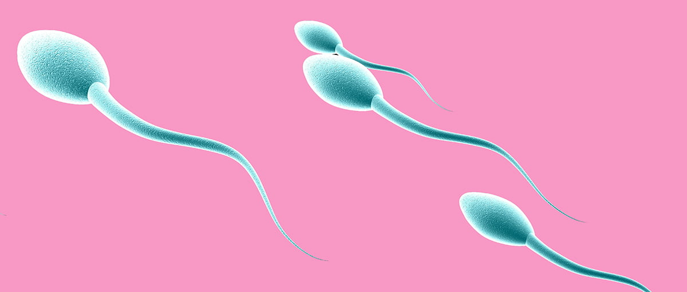
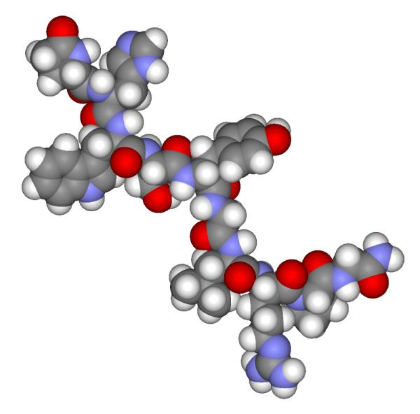

Funciones
Los testículos desempeñan varias funciones vitales en el sistema reproductor masculino y en la producción de hormonas sexuales masculinas. Aquí están las principales funciones de los testículos:
Producción de espermatozoides:
Los testículos son responsables de la producción de espermatozoides, que son células sexuales masculinas. Este proceso se llama espermatogénesis y comienza durante la pubertad y continúa a lo largo de la vida del hombre. Los espermatozoides son esenciales para la fertilización de un óvulo y la reproducción.

Producción de hormonas:
Los testículos también producen hormonas sexuales masculinas, principalmente la testosterona. La testosterona desempeña un papel fundamental en el desarrollo de las características sexuales secundarias masculinas, como el crecimiento de vello facial y corporal, el desarrollo muscular, la profundización de la voz y la libido. También afecta la producción de esperma y tiene un impacto en la salud general y el bienestar de los hombres.

Regulación de la temperatura:
Los testículos están ubicados en el escroto, que es una bolsa de piel que cuelga del cuerpo. Esta ubicación permite que los testículos estén ligeramente alejados del cuerpo, lo que es necesario para mantener una temperatura adecuada para la producción de espermatozoides. Los testículos deben estar a una temperatura ligeramente más baja que la del cuerpo para funcionar correctamente.
Almacenamiento de espermatozoides:
Los testículos también actúan como un lugar de almacenamiento temporal para los espermatozoides maduros antes de la eyaculación. Los conductos deferentes conectan los testículos con la uretra, desde donde los espermatozoides pueden ser expulsados durante la eyaculación.
.jpeg)

.jpeg)